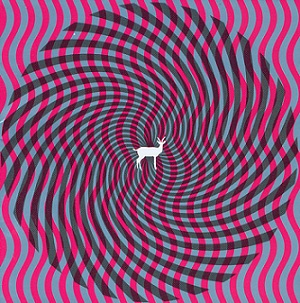
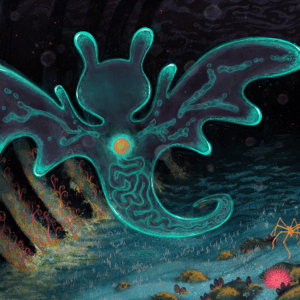

Deerhunter - Cryptograms

Deerhunter's album Cryptograms is a masterpiece of indie rock and electronic experimentation. I believe that its a fantastic expression of art as well as a great listening experience. Once of my favorite things about this album is that it shows that it cares about the pacing, themes, and even instrumental break's in the forms of songs. Some songs are harsh, others are beautifully ethereal. One of the best album's I've had the pleasure of listening to.
Glass Beach - Plastic Death

Glass Beach's Plastic Death is a haunting and atmospheric album that blends post-punk and darkwave elements. The album's production values are high, and it shows. In their first album aptly named "The First Glass Beach Album" they show incredible talent, but they have almost no production budget. As for Plastic Death, they have the production and the talent. All condensing into one of the best songs I've heard: Commatose. A beautiful song that I feel like everyone has to listen to at least once.